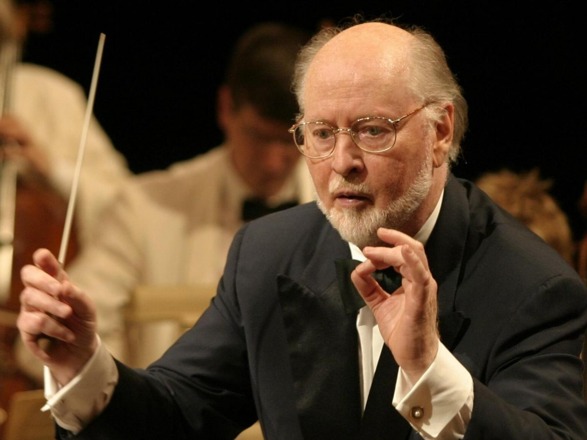

B.S.O de John Williams
Ficha técnica
- Lanzamiento: 2001
- Reconocimientos: Nominación a los Premios Óscar en 2002
- Tema destacado: "Tema de Hedwig"
Composición
Presenta muchos temas dedicados a personajes o situaciones especificas (leitmotifs) algunos de los cuales siguen siendo escuchados en películas posteriores aun sin la participación de Williams como compositor. Las posteriores películas de Harry Potter utilizan muchos de los temas de esta banda sonora, el más notable es "Hedwig's Theme". Esta pieza se presentó por primera vez en la pieza "Prologue" y ha aparecido en todas las películas de Harry Potter hasta la fecha. Dentro de estos temas también podemos encontrar dos temas dedicados para Voldemort, dos temas para Hogwarts, un tema para el Callejón Diagon, los partidos de Quidditch y el mas conocido el tema de Hedwig. El albúm fue grabado en el Estudio Air Lyndhurst y en los Estudios Abbey Road, ambos en Londres.
Su primer álbum del universo de Harry Potter fue lanzado a la venta el 30 de Octubre del 2001 por Atlantic Records. Entro al Billboard 200 en la posición numero 48 y también se posicionó en el numero 2 del listado Top Soundtracks. En el Reino Unido el álbum se posicionó en el puesto 19. En Canadá el disco logro la certificación de Oro por la Canadian Recording Industry Association por haber vendido 50 000 unidades. También logró la certificación de Oro en Japón por haber vendido 100 000 unidades segun el RIAJ. John Williams por su composición en esta película fue nominado en los 74to Premios de la Academia (Oscars) en 2002, en la categoría de Mejor Banda Sonora Original, pero perdió contra Howard Shore y la banda Sonora de El Señor de los Anillos: La Comunidad del Anillo. Curiosamente ese año Williams condujo la orquesta en la ceremonia de los Óscares y estuvo doblemente nominado en la misma categoría al competir consigo mismo por Harry Potter y por A.I. Artificial Intelligence de Steven Spielberg.

Más info